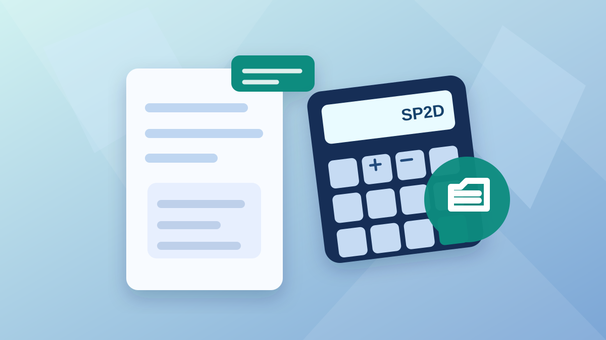

Pajak E-Katalog V6 2026 untuk Penyedia: PPh 22 0,5% atau 1,5%?
PPh 22 sebesar 0,5% tidak berlaku untuk semua pembelian di E-Katalog. Ini cara penyedia membaca mekanisme LS, UP/KKP, pemungut PPN, dan bukti potong agar harga penawaran tidak salah.

Disusun berdasarkan aturan perpajakan yang berlaku dan diperiksa pada 28 Oktober 2026. Hasil perhitungan tidak menggantikan bukti pungut atau penetapan pejabat berwenang.
Versi Mudahnya
Tarif PPh 22 0,5% berlaku pada transaksi yang memenuhi PMK 58/2022 melalui Pihak Lain yang ditunjuk dengan mekanisme UP/KKP. Pada pembayaran langsung (LS), Pihak Lain tidak memungut PPh 22 menurut skema tersebut; objek dan penyedia menentukan perlakuan PPh yang harus diperiksa oleh instansi. Selalu cek PPN serta dokumen pungut.
Transaksi LS dan UP/KKP melalui Pihak Lain yang ditunjuk.
PPh ganda, PPN salah dimasukkan, dan penggunaan tarif UMKM tanpa dasar.
Cocokkan pesanan, status PKP/NPWP, dokumen tagihan, dan pemungut.
Ada penyedia yang mengira semua transaksi E-Katalog otomatis dikenai PPh 22 sebesar 0,5%. Ada pula yang selalu memasukkan potongan 1,5% di penawaran. Keduanya bisa keliru jika cara bayar dan pihak pemungut belum dibaca.
Mengapa pajak E-Katalog V6 tidak bisa ditentukan dari nama platform?
Pengadaan melalui katalog elektronik adalah cara membeli, bukan nama objek pajak tersendiri. Dalam praktik E-Katalog atau INAPROC, pembayaran dapat dilakukan menggunakan mekanisme berbeda. PMK 58/PMK.03/2022 mengatur pungutan oleh Pihak Lain yang ditunjuk dalam Sistem Informasi Pengadaan Pemerintah. Pasal 5 membedakan transaksi yang dibayar melalui mekanisme Uang Persediaan, termasuk kartu kredit pemerintah, dari transaksi pembayaran langsung (LS).
Karena itu, berjualan di E-Katalog V6 tidak otomatis berarti platform memungut PPh 22 sebesar 0,5%. Periksa siapa Pihak Lain dalam dokumen transaksi, apakah ia memang ditunjuk sebagai pemungut, dan bagaimana pengadaan dibayar. Bila semua itu belum jelas, jangan mengunci harga penawaran hanya dari asumsi pajak umum.
Dokumen pesanan, mekanisme pembayaran, identitas pihak pemungut, serta ketentuan PPN jauh lebih penting daripada sekadar tulisan “belanja melalui E-Katalog”. Minta konfirmasi dari pejabat pengadaan atau pengelola pembayaran bila dokumennya belum menunjukkan siapa pemungut pajak.
PPh 22 0,5% dan PPh 22 1,5%: bedanya di mana?
| Situasi pengadaan | Prinsip PPh yang diperiksa | Catatan penting |
|---|---|---|
| UP/KKP melalui Pihak Lain yang ditunjuk | PPh 22 sebesar 0,5% dari nilai tagihan sebelum PPN | Dipungut Pihak Lain; pembayaran sejenis tidak dipotong PPh lagi oleh instansi |
| LS pembelian barang biasa | Ketentuan PPh 22 instansi pemerintah, umumnya 1,5% bila memenuhi syarat | Ambang, pengecualian dan dokumen pajak tetap perlu diuji |
| LS jasa badan | Periksa PPh 23, atau skema khusus sesuai objek | Jasa bukan satu kategori tarif untuk semua penyedia |
| LS jasa profesional orang pribadi | Periksa PPh 21 Bukan Pegawai | Jangan otomatis menerapkan PPh 23 |
| LS pekerjaan konstruksi | Periksa PPh final konstruksi | Tarif dipengaruhi jenis pekerjaan dan kualifikasi penyedia |
Pasal 6 PMK 58/2022 menetapkan PPh 22 sebesar 0,5% pada transaksi yang dipungut Pihak Lain. Pasal 5 ayat (5) mengecualikan pemungutan oleh Pihak Lain untuk pembayaran langsung (LS) dan penyerahan jasa angkutan umum orang pribadi tertentu. Pasal 5 ayat (6) juga mengatur agar penghasilan yang sudah dipungut PPh 22 oleh Pihak Lain tidak dipotong atau dipungut PPh lagi oleh pemungut lain atas penghasilan yang sama.
Jadi, jangan menjumlahkan otomatis PPh 22 0,5% dengan PPh 23 2% atau PPh final konstruksi pada dokumen pembayaran yang sama. Untuk beberapa penghasilan yang dikenai PPh final, pungutan PPh 22 oleh Pihak Lain merupakan bagian pelunasan, sehingga masih mungkin timbul kekurangan yang disetorkan sendiri oleh penyedia—bukan potongan ganda oleh instansi.
Contoh pajak penawaran E-Katalog untuk penyedia
Contoh A: Barang Rp10 juta, dibayar LS
Misalnya penyedia badan menjual barang Rp10 juta sebelum PPN, pembayarannya LS, identitas pajak valid, dan tidak ada pengecualian PPh 22. Tarif umum instansi 1,5% menghasilkan PPh 22 Rp150.000. Bila objek terutang PPN nonmewah, perhitungan umum menghasilkan PPN Rp1.100.000. Jika instansi juga berkewajiban memungut PPN, nilai invoice Rp11.100.000 akan menghasilkan pembayaran bersih simulasi Rp9.850.000. Ini contoh dengan asumsi ketentuan umum, bukan angka otomatis untuk semua LS.
Contoh B: Barang Rp10 juta, UP melalui Pihak Lain
Dengan nilai dasar barang sama, tetapi menggunakan UP/KKP melalui Pihak Lain pemungut yang memenuhi PMK 58/2022, PPh 22 sebesar 0,5% menjadi Rp50.000. Jika PPN nonmewah Rp1.100.000 dipungut Pihak Lain, nilai tagihan termasuk PPN Rp11.100.000 dan perkiraan dana yang masuk rekening penyedia Rp9.950.000. Selisih Rp100.000 dibanding contoh LS muncul dari perbedaan PPh yang dipungut saat pembayaran, bukan karena semua katalog selalu memakai tarif 0,5%.
Contoh C: Pekerjaan konstruksi melalui Pihak Lain
Misalkan nilai dasar pekerjaan konstruksi usaha kecil bersertifikat Rp100 juta dan PPh final sesuai PP 9/2022 sebesar 1,75%, atau Rp1.750.000. Jika mekanisme pengadaan memenuhi ketentuan Pihak Lain, pemungutan PPh 22 saat pembayaran sebesar 0,5% adalah Rp500.000. Maka terdapat estimasi sisa pelunasan PPh final Rp1.250.000 yang perlu ditelaah untuk disetor sendiri oleh penyedia. Nilai ini tidak ditambahkan sebagai pemotongan PPh kedua oleh OPD.
Bagaimana dengan PPh final UMKM 0,5% pada 2026?
Tarif PPh final UMKM memang masih sebesar 0,5%, tetapi jangan tertukar dengan PPh Pasal 22 0,5% oleh Pihak Lain. Jenis dan perlakuan keduanya berbeda. PP 20 Tahun 2026 yang mengubah PP 55/2022 memperbarui kelompok wajib pajak yang dapat memakai fasilitas UMKM, di antaranya orang pribadi, perseroan perorangan yang memenuhi kriteria, dan koperasi sesuai masa pemanfaatan. Batas omzet umum fasilitas adalah Rp4,8 miliar per tahun, dengan ketentuan lain yang perlu ditelaah; tidak semua CV dan PT biasa otomatis memenuhi fasilitas tersebut.
Untuk transaksi LS yang melibatkan penyedia yang mengaku menggunakan PPh final UMKM, cocokkan kelayakan dan surat keterangan perpajakannya sebelum menentukan apakah pemotongan umum perlu dikecualikan atau perlakuan final diterapkan. Pada orang pribadi yang memenuhi syarat, ketentuan bagian omzet sampai Rp500 juta setahun juga bisa berpengaruh. Penyedia sebaiknya tidak sekadar memasukkan nominal 0,5% ke invoice tanpa dokumen pendukung.
Masalah serupa dapat terjadi pada pekerjaan konstruksi. Tarif 1,75%, 2,65%, 3,5%, 4%, atau 6% tidak boleh dipilih berdasarkan tebakan. Jenis pekerjaan, SBU/SKK, serta status sertifikasi dan kualifikasi usaha menentukan tarif finalnya. Hal itu harus diperiksa dari dokumen kontrak dan penyedia, bukan hanya dari deskripsi produk katalog.
Cara menggunakan kalkulator pajak E-Katalog 2026
Pada kalkulator khusus penyedia, pilih pertama-tama apakah pembayaran LS atau UP/KKP melalui Pihak Lain yang ditunjuk. Jika memilih skema Pihak Lain, pastikan ada informasi penunjukan/pemungutan pada dokumen. Setelah itu masukkan bentuk penyedia, status NPWP/NIK, status PKP, rezim PPh usaha, serta kategori barang/jasa. Pilihan yang belum dapat diverifikasi sengaja menahan hasil agar angka tidak dianggap pasti.
Tentukan apakah harga yang diinput sudah termasuk PPN. Pada penyerahan nonmewah yang dikenai PPN dengan mekanisme umum PMK 131/2024, tarif efektifnya 11%. PPN dan PPh tidak otomatis selalu dipungut oleh pihak yang sama. Selesai mengisi, lihat ringkasan pihak pemungut, dana bersih, catatan verifikasi, dan jika relevan estimasi selisih pelunasan pajak final. Coba kalkulator pajak E-Katalog & INAPROC untuk penyedia →
Untuk penyedia yang baru pertama kali menerima pesanan pemerintah, simpan pesanan dan bukti transaksi, invoice, dokumen yang dipersamakan dengan faktur pajak bila memenuhi syarat, serta bukti pungut yang disediakan platform. PMK 58/2022 mengatur dokumen tagihan tertentu yang dapat dipersamakan dengan bukti pungut PPh 22 dan faktur pajak. Jika nilai yang dibayar berbeda dari perkiraan, dokumentasikan dasar selisih sebelum merevisi harga atau menyimpulkan pajaknya salah.
Pertanyaan yang sering ditanyakan penyedia
Apakah semua transaksi E-Katalog V6 dipungut PPh 22 0,5%?
Tidak. Skema PMK 58/2022 bergantung pada Pihak Lain yang ditunjuk serta mekanisme pembayaran yang memenuhi aturan. Untuk LS, Pihak Lain tidak memungut PPh 22 0,5% menurut skema itu; kewajiban pajak instansi perlu ditetapkan berdasarkan objek transaksi.
Apakah penyedia non-PKP boleh menambah PPN 11%?
Jangan otomatis menagih PPN sebagaimana PKP. Status PKP dan apakah transaksi terutang PPN perlu dibuktikan. Kalkulator akan menahan skenario yang tidak konsisten antara non-PKP dan klaim PPN 11%.
Jika PPh 22 0,5% sudah dipungut platform, apakah OPD memotong PPh 23 lagi?
Tidak untuk penghasilan yang sama dan sudah dipungut oleh Pihak Lain sesuai PMK 58/2022. Namun untuk PPh final tertentu, penyedia mungkin masih wajib melunasi selisih pajak final sendiri.
Rujukan DJP dan peraturan resmi
- PMK 58/2022 tentang pemungutan oleh Pihak Lain, khususnya Pasal 5–10.
- DJP: Jenis pemungut dan tarif PPh 22.
- PMK 51 Tahun 2025 tentang pemungutan PPh 22.
- PP 20 Tahun 2026 tentang penyesuaian PPh final UMKM.
- PMK 131/2024: Penjelasan PPN nonmewah dan mewah.
- Lampiran contoh pemungutan PMK 58/2022.
Terakhir diperiksa 28 Oktober 2026. Artikel ini untuk edukasi dan bukan persetujuan atau penetapan pajak resmi. Validasi akhir mengikuti dokumen pesanan, bukti pungut, ketentuan perpajakan, serta pejabat berwenang.
Apakah artikel ini membantu?
Komentar rekan ASN
Tanggapi isi artikel atau berbagi pengalaman yang relevan. Tidak perlu akun dan email.
Komentar ditinjau sebelum ditampilkan. Jangan kirim NIP, rekening, kata sandi, dokumen pekerjaan, atau data pribadi. Baca kebijakan privasi.
Memuat komentar…